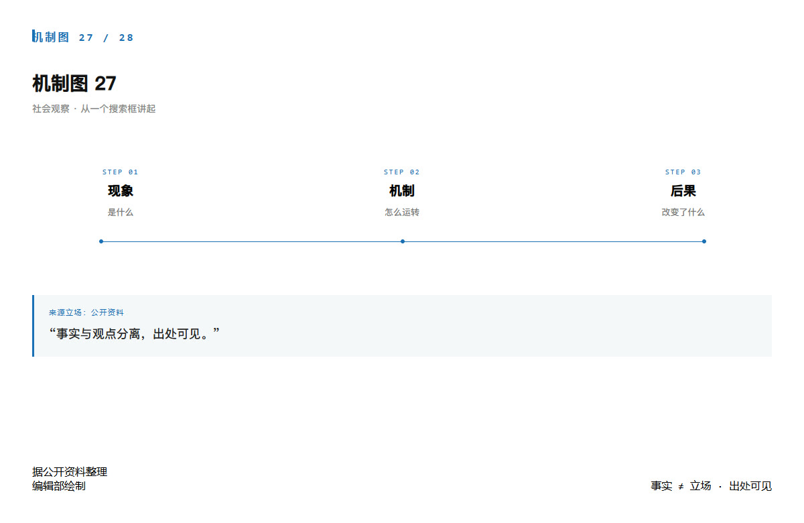

2013年那个小框，后来管住了几亿人的眼睛
社会观察 · 从一个搜索框讲起
2013 年，微博搜索结果页旁多了一个不起眼的小框，只把大家搜得最多的词列出来。三年之后，全国人今天关心什么，会由这个框说了算。产品最初的样子，总是谦卑得让人认不出来。
数字来自平台财报、公开报道和当年的产品访谈。我只讲产品是怎么长成这样的，不碰具体事件里谁对谁错，当事人的具体指控一个字都不转述。
你以为的「大家都在关注」，是它替你筛过后递到眼前的几件事；筛掉的，你甚至不知道自己错过。
最初的热搜榜纯粹是个技术功能：谁搜得多谁排在前面，没有运营，没有加权，更没有人专门去刷。上榜不代表什么，字很小，藏在搜索框下面，像顺手加上去的装饰。
转折发生在 2015 年前后。移动互联网的新用户增长见顶，平台之间不再比谁拉来更多人，开始比谁能让同一个人多留一会儿。停留时长成了硬指标，榜单正是最省力的时长机器。
榜单把散落在几亿人里的注意力收拢到一个页面，一屏看完，还能顺着链接往下钻。2016 年底，微博月活 3.13 亿、日活 1.39 亿。到这个体量，它已经不是功能，而是一道货真价实的闸门。
平台的说法是：榜单只是「客观数据的自然呈现」，如实反映大家在搜什么，不作价值判断。凡是掌握分发权的人，似乎都喜欢把自己的选择，说成是别人自己做的选择。
📌 一个值得记住的判断
一个看起来最中性的指标——搜索量——其实是在给情绪发通行证。它不问事情多大，只问有多少人坐不住。坐不住的人越多，闸门开得越大。
搜索量听着公平：谁搜得多谁排前面。可什么样的东西会让人放下手里的事，专门点进搜索框去搜？这个动作本身，已经替我们筛掉了一大半。
不是最重要的，是最让人坐不住的。政策、制度、专业议题，门槛高，要背景知识，起情绪慢；冲突、背叛、道德审判，天然带着让人立刻搜索的冲动。这是注意力的物理性质，不是谁的错。
「搜索量高」被悄悄翻译成「大家关心」，又被翻译成「这件事重要」。三步翻译合起来，把原来的判断标准换掉了。一个需要三段前提才讲得清的议题，在第一步就输了。
不是它不重要，是它不会催生那个「搜一下」的动作。搜索框只记录手指的动作，不记录事情的分量，两者之间隔着一道它永远跨不过去的缝。
做榜单的人大概真心觉得自己在提供客观工具。产品没有作恶，它只是把「让人坐不住」变成了可以兑换的资产。谁的情绪强，谁就换到更多曝光；资产没有立场，谁来兑换，它就替谁干活。
从这以后，「热点」不再是「正在发生的重要的事」，而更接近「正在被大量搜索的事」。两件事有时候重叠，但从来不是一回事。把它们混着用，是后来很多误会的起点。
热搜区里躺着两种人：一种在搜，一种在看别人搜什么。前者用手指贡献数据，后者用眼睛接收结论。时间久了，后者会默认榜单就是世界的原貌，看不见的，就等于没发生。
赫伯特·西蒙，1971 年
"A wealth of information creates a poverty of attention."
信息富足，注意力贫困。热搜这台机器，卖的正是贫困本身。它让稀缺变得可见，也让可见变得可售。

▲ 热搜从功能到闸门的三步（编辑部绘制）
✍️ 你上一次点进热搜，是想了解一件事，还是怕错过什么？
两种动机很不一样。评论区说说。觉得有用，点个赞、点个「在看」，转给也会刷榜的人。
下一篇：两条微博下面的评论数，把「愤怒比声援值钱」摆到了台面上。
资料来源
微博产品公开信息：2013 年热搜榜上线；2015 至 2016 年间榜单产品化，平台竞争转向用户时长。据公开报道与产品访谈整理。
微博 2016 年第四季度财报：月活跃用户 3.13 亿、日活跃用户 1.39 亿（公司自报口径）。
Herbert A. Simon, "Designing Organizations for an Information-Rich World", 1971。
「搜索量判定的中性假象」为编辑部机制推论；平台从未将情绪列为排序因子，此处讨论的是指标的客观后果，不是主观意图。
社会观察，不站任何性别立场。事实据公开来源，未证实指控不转述、不评价。拆解规则是为了理解，不是行动指南。